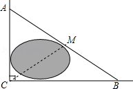
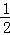
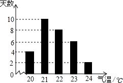
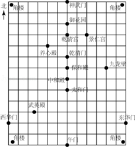
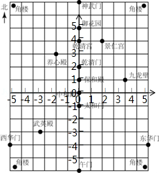
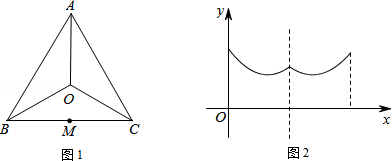

2015年北京市中考数学试题 · 选择题 第6、7、8、9、10题 · 对应解析
6．（3分）（2015•北京）如图，公路AC，BC互相垂直，公路AB的中点M与点C被湖隔开．若测得AM的长为1.2km，则M，C两点间的距离为（ ）

A．0.5kmB．0.6kmC．0.9kmD．1.2km
【解答】解：∵在Rt△ABC中，∠ACB=90°，M为AB的中点，
∴MC=

AB=AM=1.2km．故选D．
7．（3分）（2015•北京）某市6月份日平均气温统计如图所示，则在日平均气温这组数据中，众数和中位数分别是（ ）

A．21，21B．21，21.5C．21，22D．22，22
【解答】解：这组数据中，21出现了10次，出现次数最多，所以众数为21，
第15个数和第16个数都是22，所以中位数是22．
故选C．
8．（3分）（2015•北京）如图是利用平面直角坐标系画出的故宫博物院的主要建筑分布图，若这个坐标系分别以正东、正北方向为x轴、y轴的正方向，表示太和门的点的坐标为（0，﹣1），表示九龙壁的点的坐标为（4，1），则表示下列宫殿的点的坐标正确的是（ ）

A．景仁宫（4，2）B．养心殿（﹣2，3）
C．保和殿（1，0）D．武英殿（﹣3.5，﹣4）
【解答】解：根据表示太和门的点的坐标为（0，﹣1），表示九龙壁的点的坐标为（4，1），
可得：原点是中和殿，

所以可得景仁宫（2，4），养心殿（﹣2，3），保和殿（0，1），武英殿（﹣3.5，﹣3），
故选B
9．（3分）（2015•北京）一家游泳馆的游泳收费标准为30元/次，若购买会员年卡，可享受如下优惠：
会员年卡类型 | 办卡费用（元） | 每次游泳收费（元） |
A 类 | 50 | 25 |
B 类 | 200 | 20 |
C 类 | 400 | 15 |
例如，购买A类会员年卡，一年内游泳20次，消费50+25×20=550元，若一年内在该游泳馆游泳的次数介于45～55次之间，则最省钱的方式为（ ）
A．购买A类会员年卡B．购买B类会员年卡
C．购买C类会员年卡D．不购买会员年卡
【解答】解：设一年内在该游泳馆游泳的次数为x次，消费的钱数为y元，
根据题意得：
yA=50+25x，
yB=200+20x，
yC=400+15x，
当45≤x≤55时，
1175≤yA≤1425；
1100≤yB≤1300；
1075≤yC≤1225；
由此可见，C类会员年卡消费最低，所以最省钱的方式为购买C类会员年卡．
故选：C．
10．（3分）（2015•北京）一个寻宝游戏的寻宝通道如图1所示，通道由在同一平面内的AB，BC，CA，OA，OB，OC组成．为记录寻宝者的行进路线，在BC的中点M处放置了一台定位仪器．设寻宝者行进的时间为x，寻宝者与定位仪器之间的距离为y，若寻宝者匀速行进，且表示y与x的函数关系的图象大致如图2所示，则寻宝者的行进路线可能为（ ）

A．A→O→BB．B→A→CC．B→O→CD．C→B→O
【解答】解：A、从A点到O点y随x增大一直减小到0，故A不符合题意；
B、从B到A点y随x的增大先减小再增大，从A到C点y随x的增大先减小再增大，但在A点距离最大，故B不符合题意；
C、从B到O点y随x的增大先减小再增大，从O到C点y随x的增大先减小再增大，在B、C点距离最大，故C符合题意；
D、从C到M点y随x的增大而减小，一直到y为0，从M点到B点y随x的增大而增大，明显与图象不符，故D不符合题意；
故选：C．
二、填空题（本题共18分，每小题3分）